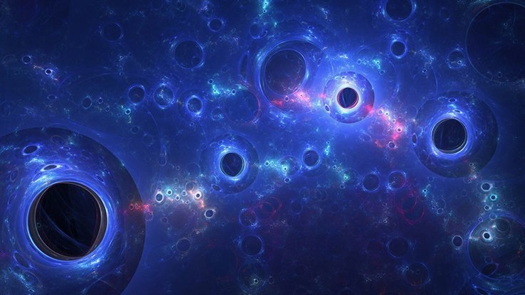
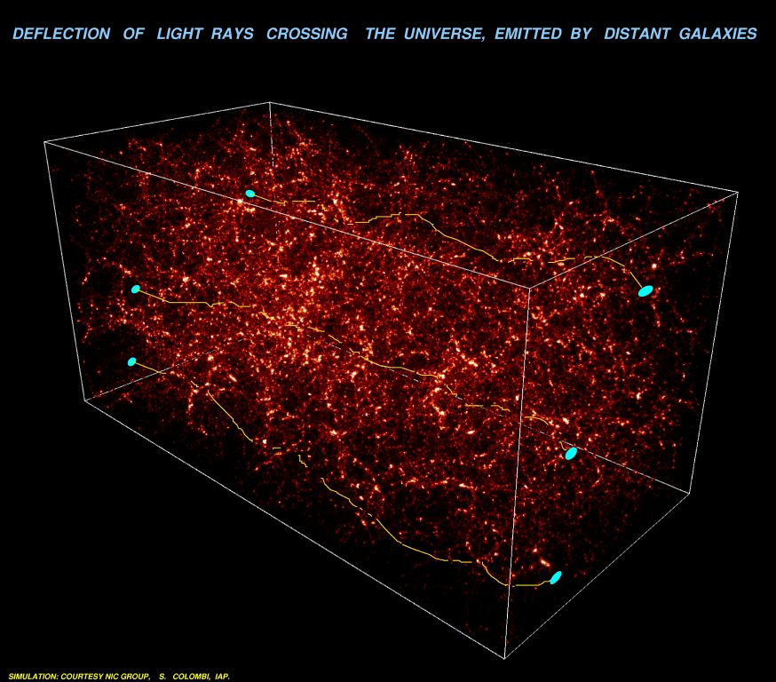
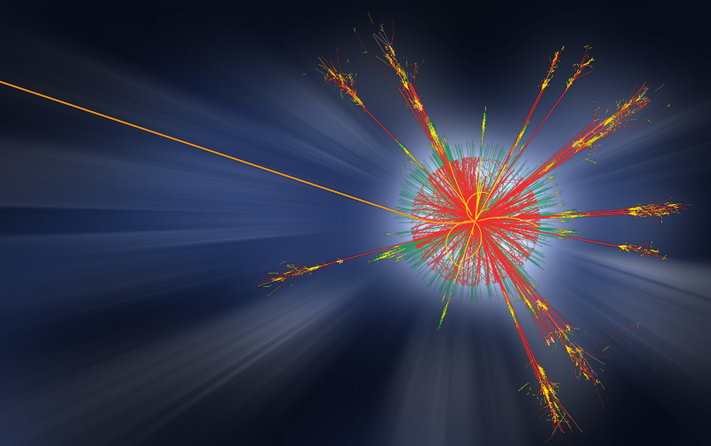
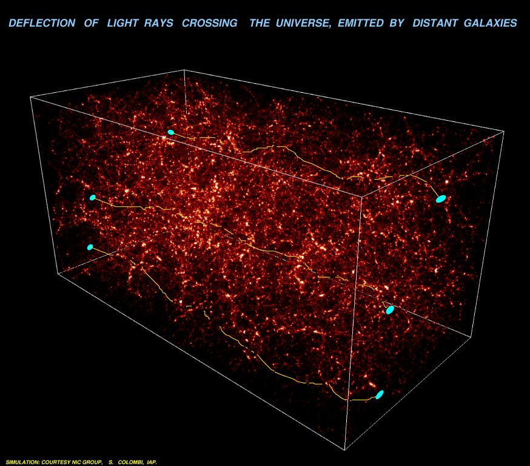
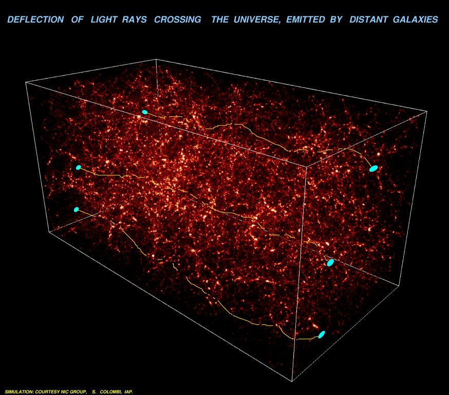

A mysterious form of matter pervading the Universe.

What is dark matter?
Dark matter is a hypothetical form of matter that does not interact with the electromagnetic spectrum (not visible) but still affects other objects. There is a large amount of evidence indicating its existance. For example, dark matter causes gravitational lensing. Gravitational lensing is a phenomenon that occurs when extreme gravity causes light to bend. As a result, the bending of light from distant galaxies indicates that something is causing an increase in gravity that is, otherwise, going undetected. Similarly, astrophysicists theorize that there is something causing stars on the outside of galaxies to rotate faster than predicted by current models. Dark matter is often cited as an explanation for this phenomenon. Overall, astrophysicists estimate that there is about six times more dark matter than normal matter in the Universe and that it comprises about 85% of all matter in the Universe.This map to the right displays the bending of light as it travels through space. Normally, light travels in a straight path from the source of emission. However, in this figure, scientists at the Canada France Hawaii Telescope mapped the pathway of light from distant galaxies and found notable distortion. In particular, they noticed that the light always tended to deflect in a particular direction. However, there was no massive objects detected in this region, indicating an unknown source of gravity. As a result, they predicted that the bending of the light (gravitational lensing) from distant galaxies was caused by dark matter.

Possible Constituents Of Dark Matter
One popular theory suggests that dark matter is composed of Weakly interacting massive particles (WIMPs). WIMPs would be extremely heavy and electrically neutral. As a result, they wouldn't interact much with ordinary matter, but would explain the increased levels of gravity in certain regions of the Universe. Another theory suggests that dark matter consists of primordial black holes. Primordial black holes theoretically formed right after the Big Bang and can be extremely small. They would have formed from the collapse of energy or ionized matter during the inflationary period. However, there is no evidence that primordial black holes exist, in the first place, allowing them to be considered as a possible constituent of dark matter.

Alternatives Theories To Dark Matter
Modified Newtonian DynamicsModified Newtonian Dynamics is a model of gravity that some astrophysicists prefer since dark matter particles still have yet to be discovered. It describes a modified version of Newton's Universal Law of Gravity in which all gravity has a small remnant pull, regardless of distance. As this would build up, the remnant pull would eventually have the ability to modify the rotational curve of a galaxy in the same way researchers hypothesized dark matter did. However, the main issue with the Modified Newtonian Dynamics is that galaxies still show a discrepency in mass between the predicted value and the actual value. As a result, some astrophysicists argue that dark matter is still necessary to accompany Modified Newtonian Dynamics and that it isn't an alternative to dark matter.
 
